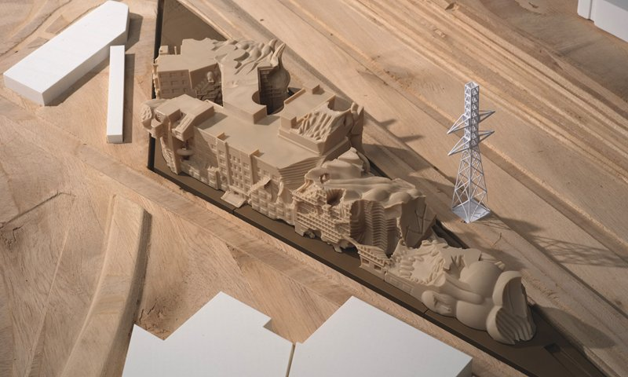
Site model of the combined massing. Full size: Site model of the combined massing (6827 × 4096, 14.4 MB)
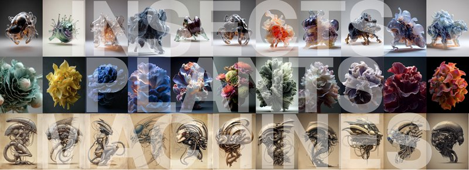
The catalog of generated samples: insects, plants, and machines. Full size: The catalog of generated samples: insects, plants, and machines (4000 × 1449, 8.1 MB)
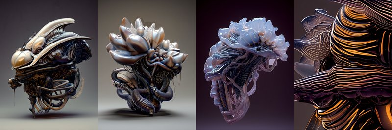
The four hybridized “post-natural” organisms. Full size: The four hybridized “post-natural” organisms (4000 × 1328, 5.6 MB)
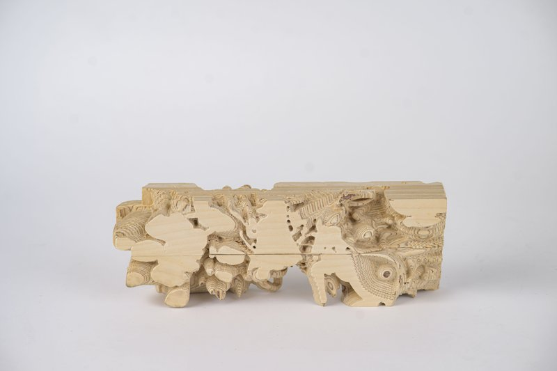
CNC-milled wood massing model. Full size: CNC-milled wood massing model (8256 × 5504, 1.5 MB)
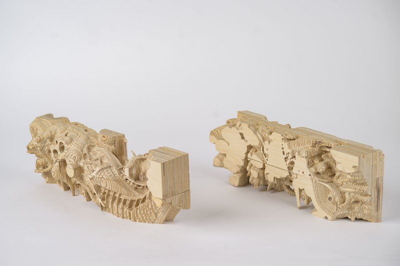
CNC-milled wood massing models. Full size: CNC-milled wood massing models (7960 × 5307, 1.8 MB)
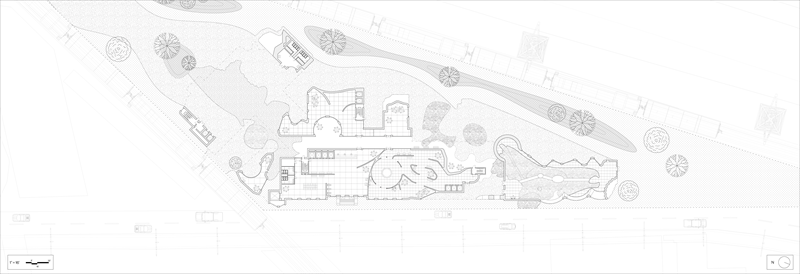
Plan. Full size: Plan (10500 × 3600, 3.2 MB)
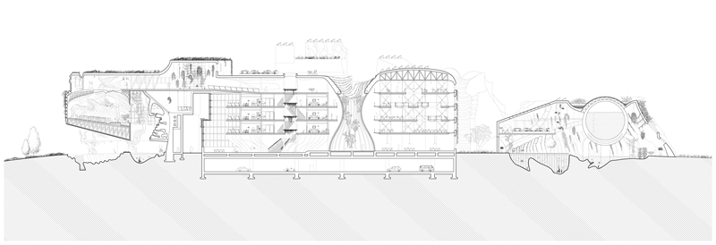
Section. Full size: Section (10500 × 3600, 3.0 MB)
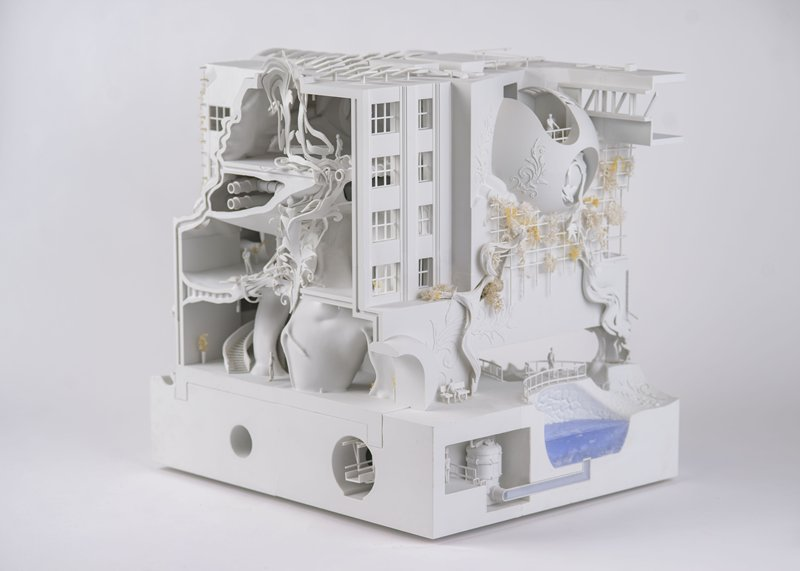
Sectional chunk model. Full size: Sectional chunk model (7705 × 5504, 1.3 MB)
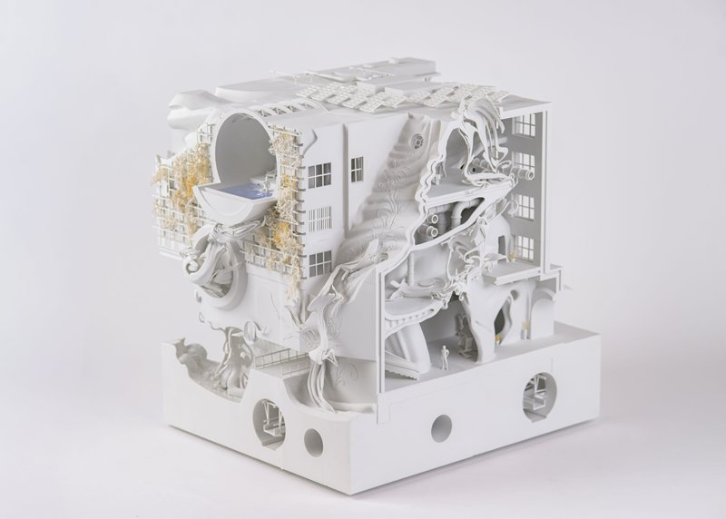
Sectional chunk model, second view. Full size: Sectional chunk model, second view (7594 × 5425, 1.2 MB)
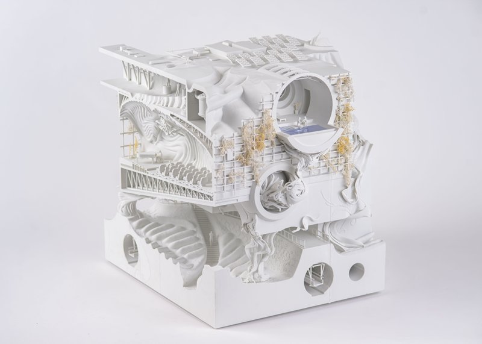
Sectional chunk model, third view. Full size: Sectional chunk model, third view (7705 × 5504, 1.4 MB)
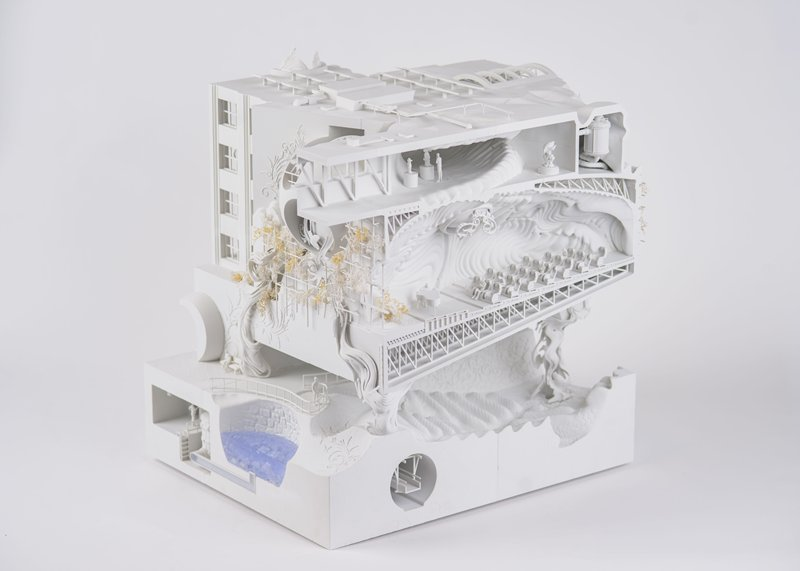
Sectional chunk model, fourth view. Full size: Sectional chunk model, fourth view (7705 × 5504, 1.3 MB)
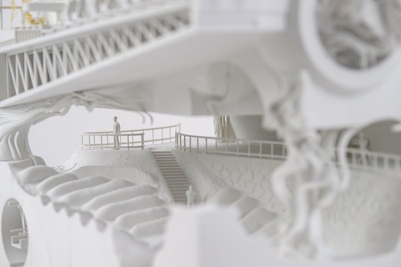
Detail of the sectional model. Full size: Detail of the sectional model (8256 × 5504, 1.1 MB)
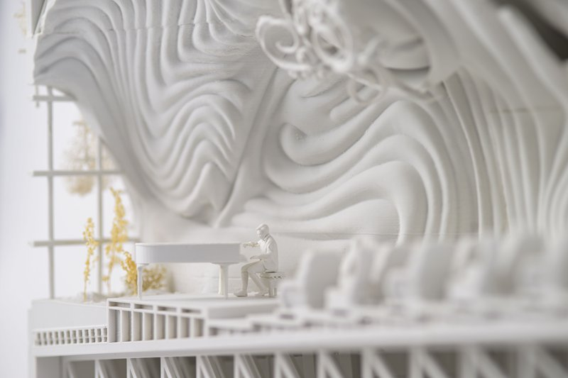
Detail of the sectional model. Full size: Detail of the sectional model (8256 × 5504, 1.4 MB)